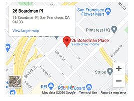

24-Hour Support Line
The W.O.M.A.N., Inc. 24-hour support line offers support
via peer counseling, safety planning, and referrals for needed resources.
Very often our support line is used as a safe space for survivors to openly share details of their lives including the abuse they survive.
As peer counselors, our role is to support them.
Many times a survivor just needs someone to listen without judging, to help them better understand their experience, and to validate their feelings and choices.
On our support line, we also connect with family and friends of survivors.
Seeing someone you love be harmed is difficult and often times,
a survivor’s loved ones don’t know what to do or how to best support the survivor in their life.
It is also common for people who love a survivor to experience a great deal of emotional distress.
We are here for you as well as the survivor you love.
You can call us 24 hours a day, 7 days a week at:
The support line can also serve as a gateway to access support services offered at W.O.M.A.N., Inc., such as our drop-in support, therapy, peer support groups, and Latinx Program.
Additional domestic violence resources & W.O.M.A.N., Inc. materials can be found here.
In order to take care of ourselves & our community, please note our TEMPORARY suspension of in-person services:
SF RESIDENTS: to schedule an online/over-the-phone domestic violence counseling appointment, email us at: appointments@womaninc.org
Contact Information
Please note that our counseling and support group services are being offered remotely as we move through the pandemic.
26 Boardman Place, San Francisco, CA 94103
(877) 384-3578
appointments@womaninc.org
Therapy
For many survivors of domestic violence, individual psychotherapy provides an excellent environment for healing and growth.
We offer both ongoing individual therapy and family therapy for survivors, their friends & family.
Therapy services are offered in English and Spanish and are provided by trained MFT Interns and Trainees who are supervised by a licensed psychotherapist. Low-cost weekly sessions are based on a sliding scale.
If you are interested in exploring therapy as an option, please email us at appointments@womaninc.org , or just call our support line (877) 384-3578
Group Support
OUR SUPPORT GROUP IS BEING HELD ONLINE.
Please note: our support group will not be meeting the week of Thanksgiving, Christmas and New Year’s Day.
We are currently offering support groups in English, and Leadership Development groups in Spanish.
Led by trained facilitators, our peer support groups offer a safe space for survivors of domestic violence to share their experience with and gain insight from each other.
In these groups, survivors are invited to explore their feelings, receive and offer support, and gain important tools needed to heal from the effects of violent relationships.
Our groups include practical information about the dynamics of abuse. We often use art and other expressive modalities in our groups.
For more information about peer counseling please fill out the form below.
Latinx Program
The Latinx Program offers in-depth case management to Spanish-speaking survivors of domestic violence,and works to support survivors in a culturally appropriate setting.
Working collaboratively with a team member, the survivor creates short and long-term goals designed to help overcome the obstacles preventing them from creating a life free of violence.
For more information about the Latinx Program, please call our support line (877) 384-3578 or email us at citas@womaninc.org>
Peer Couseling
Are you looking to connect with a domestic violence (DV) counselor?
Would you like some support from people who won’t judge you or your choices?
Are you a survivor of domestic violence, living in San Francisco?
Peer Counseling (at WOMAN Inc) might be a good option for you!
We offer 5 free sessions of appointment-based counseling for survivors and their supportive networks.
Sessions are typically one hour long, and take place between the hours of 4p-7:30p, Monday through Thursday.
For more information about peer couseling please fill out the form below.